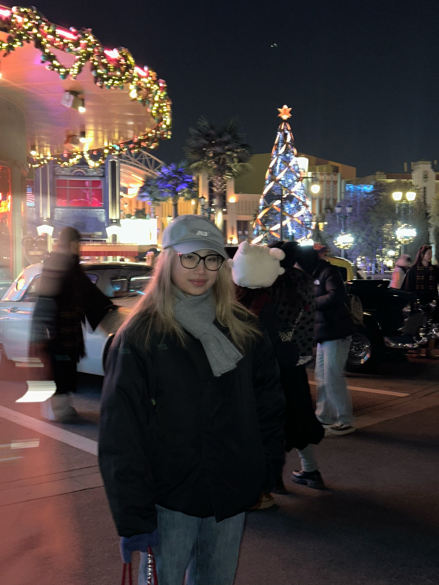
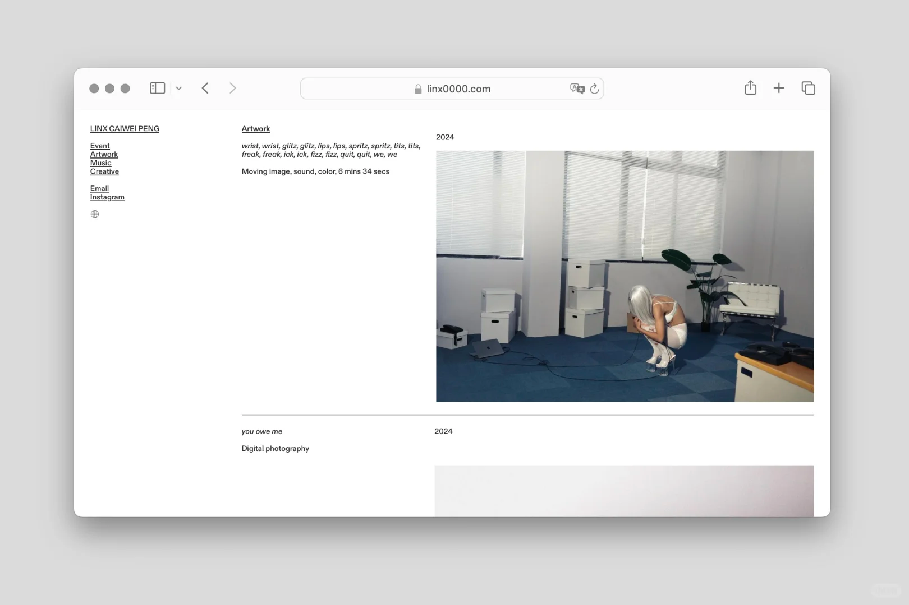
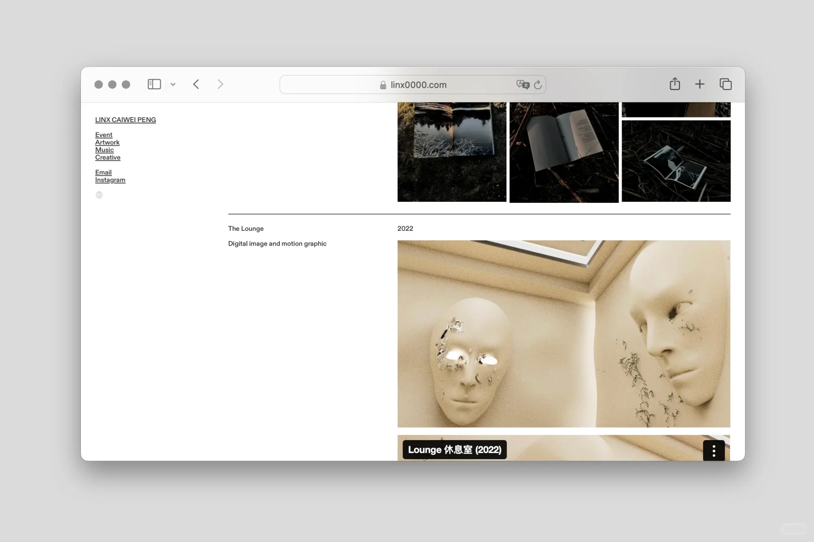
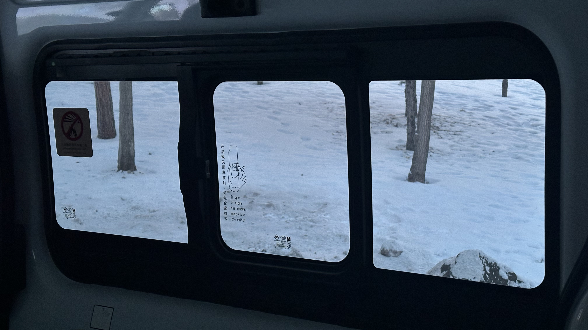

AIGC Works
深耕 AIGC 方向，擅长把提示词工程、用户需求与内容表达结合，持续做出可验证的作品产出。

我聚焦 AI 产品与创意交互方向，具备从需求洞察、产品方案、原型设计到落地验证的完整实践经验。 长期关注 AIGC、Prompt Engineering 与内容产品场景，擅长把抽象想法拆解为可执行的用户体验路径。
I turn ideas into clear product journeys and build fast, testable web prototypes. My work combines product thinking, visual narrative, and practical coding execution.
深耕 AIGC 方向，擅长把提示词工程、用户需求与内容表达结合，持续做出可验证的作品产出。

基于 HTML/CSS/JS 快速搭建高保真前端页面，注重交互节奏、信息层级与视觉叙事一致性。

覆盖工业产品与交互系统方案，强调从用户场景到功能结构再到视觉表达的一体化设计思路。
具备端到端产品管理经验，擅长需求拆解、PRD 输出、用户反馈闭环与数据驱动优化。

通过镜头记录生活细节与光影情绪，让视觉观察持续反哺产品叙事与审美判断。